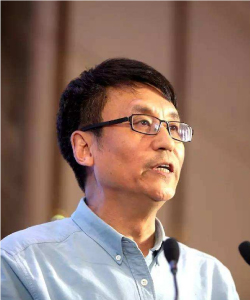

蔡小强
教育背景：
硕士、博士（清华大学，工程学）
学士（哈尔滨船舶工程学院，工程学）
研究领域：
物流与供应链管理；新调度模型及应用；投资组合最优化
个人简介：
蔡小强教授1988年获清华大学系统工程博士学位，后留校参加国家863高科技发展计划。1989-1991年在英国剑桥大学及贝尔法斯特女皇大学从事博士后研究1991-1993年受聘任教西澳大利亚大学。1993年应聘加入香港中文大学系统工程及工程管理学系，2000年起任教授。现兼任香港中文大学-清华大学高级管理人员物流和供应链管理硕士课程主任，物流技术与供应链优化研究中心总监。他曾于1996-2003年担任香港中文大学系统工程与工程管理学系的系主任，2009-2012年任研究生学部主2010-2014年任香港中文大学和声书院首任通识教育主任。
蔡教授的研究主要集中在工业与系统工程、最优化、供应链与物流管理等领域。他己于国际学术刊物、专著、及会议发表论文200多篇，其中包括主流学术刊物（如Management Science、Operations Research、Naval Research Logistics、Production and Operations Management、IIE Transactions、IEEE Transactions等）论文100多篇。曾担任多个学术刊物编委，包括IIE Transactions on Scheduling and Logistics、Journal of Scheduling、Fuzzy Optimization and Decision Making等。另获邀担任多个学术刊物客座主编/编委，如Annals of Operations Research，Journal of Global Optimization， European Journal of Operational Research。曾担任第五届国际最优化技术及应用会议大会主席，第一届最优化及高新技术应用国际研讨会主席，第十届服务系统及服务管理国际会议主席；并于多个学术会议担任国际顾问委员会委员、程序委员会委员和组织委员会委员。他是国家杰出青年科学基金（海外类）获得者，及国家“千人计划”入选专家。
学术著作：
1. X. Cai and X. Zhou, “Optimal policies for perishable products when transportation to export market is disrupted”, Production and Operations Management, forthcoming.
2. X. Cai, J. Chen, Y.B. Xiao, X.L. Xu, and G. Yu, “Fresh-product supply chain management with logistics outsourcing”, Omega, 41, pp. 752-765, 2013.
3. X. Cai, and G.L. Vairaktarakis, “Coordination of outsourced operations at a third-party facility subject to booking, overtime, and tardiness costs”, Operations Research, 60, pp. 1436-1450, 2012.
4. X. Cai, J. Chen, Y.B. Xiao, and X.L. Xu, “Optimization and Coordination of Fresh Product Supply Chains with Freshness-Keeping Effort”, Production and Operations Management, 19(3), 261-278, 2010.